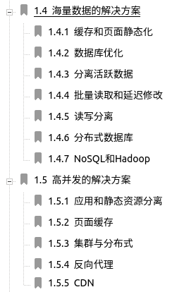
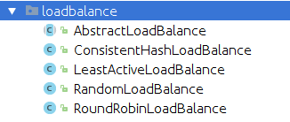
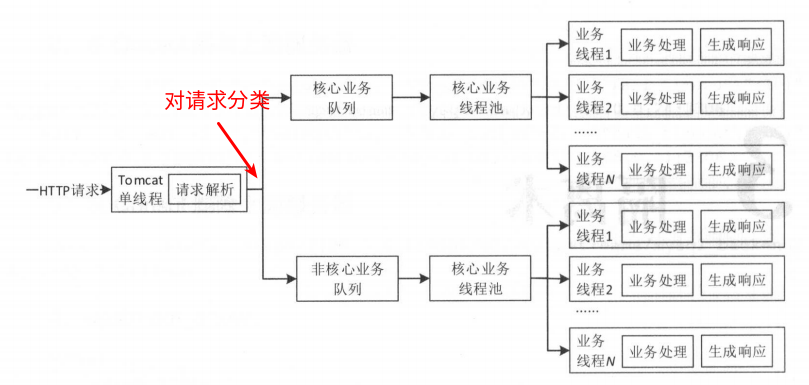
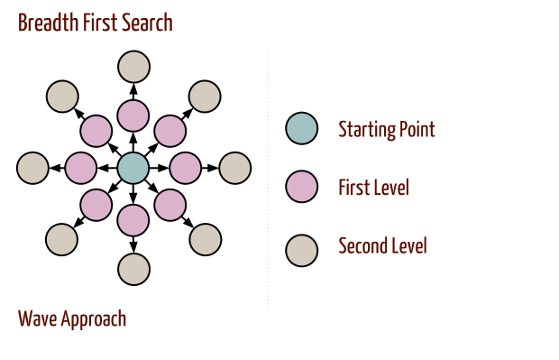
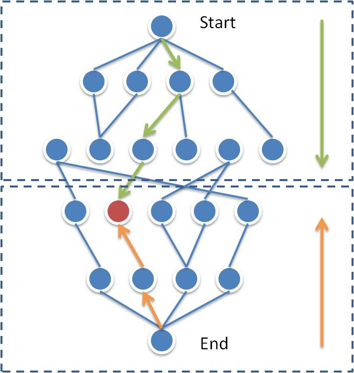

以下摘自 《看透 Spring MVC 源代码分析与实践》:


隔离手段: 线程池隔离、进程隔离、集群隔离、机房隔离、读写隔离、快慢隔离、动静隔离、爬虫隔离等。

如何测试响应时间:
|
|
|
|
The number of connections permitted is controlled by the max_connections system variable. The default value is 151 to improve performance when MySQL is used with the Apache Web server. (Previously, the default was 100.) If you need to support more connections, you should set a larger value for this variable.
Redis 限流1, Redis 限流2，Set tcp-backlog in redis.conf:
Newer versions of redis have their own backlog(积压) set to 511 and you will need this to be higher if you have many connections:
|
|
我们需要通过配置方式来开启/关闭降级开关: 使用 properties 文件作为配置文件，借助 JDK 7 WatchService 实现文件变更通知。
Facebook 或 LinkedIn 中找出两个人之间的最短路径？步骤一: Simplify the Problem - 忘记 the Millions of Users
1. 广度优先搜索:

2. bidirectional 广度优先搜索:

步骤二: Handle the Millions of Users
int machine index = getMachineIDForUser(personID);#machine_indexPerson friend = getPersonWithID(person_id);we must recognize that URL parameters might indicate a completely different page. For example, the page www.careercup.com/page?pid=microsoft-interviewquestionsis totally different from the page www.careercup.com/page?pid=google-interviewquestions. But, we can also append URL parameters arbitrarily to any URL without truly changing the page, provided it’s not a parameter that the web application recognizes and handles. The page www.careercup.com?foobar=hello is the same as www.careercup.com.
Just how much space do 1O billion URLs take up? If each URL is an average of 100 characters, and each character is 4 bytes, then this list of 1O billion URLs will take up about 4 TB. We are probably not going to hold that much data in memory.
Let’s just pretend for a moment that we were 想象我们可以放到内存中, since it’s useful to first construct a solution for the simple version. Under this version of the problem, we would just create a 哈希表 where each URL maps to true if it’s already been found elsewhere in the list. (As an alternative solution, we could 排序 and look for the duplicate values that way. That will take a bunch of extra time and offers few advantages.)
方案一: 磁盘存储:
将所有这些 URL 拆成 4000 份，每份 1GB. An easy way to do that might be to store each URL u in a file named <x>.txt where x = hash(u) % 4000. load each file into memory, create a hash table of the URLs, and look for duplicates.
方案二: 多台机器:
The main pro is that we can 并行操作, such that all 4000 chunks are 同时处理. For large amounts of data, this might result in a faster solution.
1. Design a Cache for a Single System:
how would you create a data structure that enables you to easily purge old data and also efficiently look up a value based on a key?
2. Expand to Many Machines:
3. Updating results when contents change: